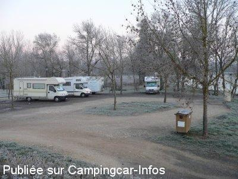
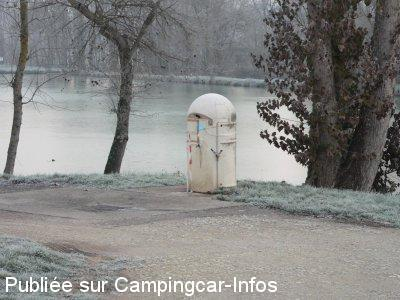
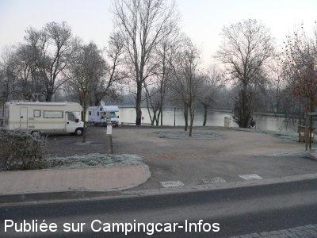

ASN = Aire de services avec stationnement nuit possible de :
GIMONT
(N° 471)
Accès/adresse :
Avenue de Cahuzac
32200 GIMONT
32200 GIMONT
Latitude : (Nord) 43.63014° Décimaux ou 43° 37′ 48′′
Longitude : (Est) 0.86942° Décimaux ou 0° 52′ 9′′
Tarif : Gratuit
Type de borne : Autre
Services :


Tous commerces
Autres informations :
Ouverte toute l'année
Tel Office du Tourisme : +33 (0)562 677 787

Le 03/01/2007 par bruno M

Le 03/01/2007 par bruno M

Le 03/01/2007 par bruno M
de
nelly
le 19/09/2015 :
Nous y avons stationné une nuit afin de voir passer les convois transportant l'A 380 en pièces détachées!impressionnant!!
Nous y avons stationné une nuit afin de voir passer les convois transportant l'A 380 en pièces détachées!impressionnant!!
de
herderien
le 30/08/2015 :
Nous y sommes passés fin août, je confirme bartoletti . Aire à éviter à cause du bruit de la route 'sortie delicate
Nous y sommes passés fin août, je confirme bartoletti . Aire à éviter à cause du bruit de la route 'sortie delicate
de
bartoletti
le 29/10/2013 :
Aire trés bruyante.Sale .sortie de l'aire trés délicate.à ne pas recommender.Dommage,village superbe.
Aire trés bruyante.Sale .sortie de l'aire trés délicate.à ne pas recommender.Dommage,village superbe.
de
Gilbert ADEUX
le 05/04/2013 :
De passage le 26 mars 2013. Je confirme cadre agréable près du plan d'eau, mais toujours bruyante par la circulation, et délicate pour la sortie.
G.A. 35720
De passage le 26 mars 2013. Je confirme cadre agréable près du plan d'eau, mais toujours bruyante par la circulation, et délicate pour la sortie.
G.A. 35720
de
Mitch83
le 29/05/2012 :
Aire bruyante,passage de camion la nuit.Par contre très agréable au bord d'un lac avec promenade autour et village sympa.Services facile d'accès et gratuit,WC public très propre.
Aire bruyante,passage de camion la nuit.Par contre très agréable au bord d'un lac avec promenade autour et village sympa.Services facile d'accès et gratuit,WC public très propre.
de
HERVE
le 16/04/2011 :
AVRIL 2011
toujours trop bruyante pour la nuit,dommage car le village et très joli et de belles balades a faire ,pas de vidange eau noires
AVRIL 2011
toujours trop bruyante pour la nuit,dommage car le village et très joli et de belles balades a faire ,pas de vidange eau noires
de
Pierre Broye
le 16/07/2010 :
C'est vrai que la N124 est assez bruyante. Mais pour une aire gratuite, je l'ai trouvée assez charmante avec son lac, ses oies et canards, sa chute d'eau, un très bon accueil des gens du coin et de bons renseignements sur les activités et les petites choses pittoresques par les personnels de l'office du tourisme.
C'est vrai que la N124 est assez bruyante. Mais pour une aire gratuite, je l'ai trouvée assez charmante avec son lac, ses oies et canards, sa chute d'eau, un très bon accueil des gens du coin et de bons renseignements sur les activités et les petites choses pittoresques par les personnels de l'office du tourisme.
de
Alain & Martine
le 18/02/2010 :
Aire en effet dans un cadre agréable, autour du plan d'eau. Avec les enfants, prévoir du pain dur pour donner à manger aux canards et aux oies. Possibilité de s'approvisionner au village en s'y rendant à pied à partir de l'aire.
En effet, pas vu de possibilité de vidanger la cassette WC, sinon eau et vidange eaux grises en fonction en février. Dommage, en effet, que la route soit passagère et donc quelque peu bruyante.
Aire en effet dans un cadre agréable, autour du plan d'eau. Avec les enfants, prévoir du pain dur pour donner à manger aux canards et aux oies. Possibilité de s'approvisionner au village en s'y rendant à pied à partir de l'aire.
En effet, pas vu de possibilité de vidanger la cassette WC, sinon eau et vidange eaux grises en fonction en février. Dommage, en effet, que la route soit passagère et donc quelque peu bruyante.
de
bibigugupopaul
le 25/11/2009 :
A l'appui des commentaires déjà mentionnés : environnement très joli (les oies viennent vous manger dans les mains !). Il est vraiment dommage que cette aire ne puisse pas être aménagée bien à l'écart de la RN très circulante et très bruyante, la commune y gagnerait largement en fréquentation et elle en vaut le détour !! Visitez les halles du marché et le patio de la mairie, ils sont très beaux !
A l'appui des commentaires déjà mentionnés : environnement très joli (les oies viennent vous manger dans les mains !). Il est vraiment dommage que cette aire ne puisse pas être aménagée bien à l'écart de la RN très circulante et très bruyante, la commune y gagnerait largement en fréquentation et elle en vaut le détour !! Visitez les halles du marché et le patio de la mairie, ils sont très beaux !
de
Iakito
le 05/08/2009 :
Passage fin juillet : aire très agréable au bord d'un étang avec avec canards, oies (normal! c'est la région du confit!!) et pêcheurs. Elle est en 2 parties, la partie haute en pente et proche de la N124 (Toulouse - Auch), la partie basse près d'une petite rivière avec un espèce de barrage sur lequel l'eau passait à fort débit. Des personnes d'un CC garé à proximité nous ont dit ne pas avoir dormi de la nuit à cause du bruit permanent généré par la chute d'eau.
La circulation diminue très fortement la nuit. La vidange des WC se fait de façon étrange... il y a un panneau disant qu'il faut le faire "dans la grille" avec une flèche vers le bas indiquant le pied du poteau portant ce panneau et avec d'autres camping-caristes, nous avons cherché la grille pour n'en trouver qu'une seule à proximité de ce panneau: celle de la vidange des eaux usées...
Passage fin juillet : aire très agréable au bord d'un étang avec avec canards, oies (normal! c'est la région du confit!!) et pêcheurs. Elle est en 2 parties, la partie haute en pente et proche de la N124 (Toulouse - Auch), la partie basse près d'une petite rivière avec un espèce de barrage sur lequel l'eau passait à fort débit. Des personnes d'un CC garé à proximité nous ont dit ne pas avoir dormi de la nuit à cause du bruit permanent généré par la chute d'eau.
La circulation diminue très fortement la nuit. La vidange des WC se fait de façon étrange... il y a un panneau disant qu'il faut le faire "dans la grille" avec une flèche vers le bas indiquant le pied du poteau portant ce panneau et avec d'autres camping-caristes, nous avons cherché la grille pour n'en trouver qu'une seule à proximité de ce panneau: celle de la vidange des eaux usées...
de
Claude MUT
le 22/02/2008 :
Bonjour à tous. Remerçions la municipalité de Gimont d'avoir installé cette aire totalement gratuite. Il y a peut-être du bruit mais l'endroit et les environs sont splendides. Et puis, A CE PRIX LA, il ne faudrait pas être trop exigeant. Evitons de nous plaindre toujours de tout. Les Gersois sont des gens très conviviaux.
Bonjour à tous. Remerçions la municipalité de Gimont d'avoir installé cette aire totalement gratuite. Il y a peut-être du bruit mais l'endroit et les environs sont splendides. Et puis, A CE PRIX LA, il ne faudrait pas être trop exigeant. Evitons de nous plaindre toujours de tout. Les Gersois sont des gens très conviviaux.
de
Alain
le 18/08/2007 :
Stationné pour une nuit sur cette aire entre le 08 et le 15 aout, en période de vacances. Cette aire est très bruyante, juste en bordure de nationale, nuit infernale... A éviter à tous prix pour stationner ou avec des boules Quies... Seule la vidange est correcte et le plein d'eau fraiche.
Stationné pour une nuit sur cette aire entre le 08 et le 15 aout, en période de vacances. Cette aire est très bruyante, juste en bordure de nationale, nuit infernale... A éviter à tous prix pour stationner ou avec des boules Quies... Seule la vidange est correcte et le plein d'eau fraiche.
de
fanchette
le 04/11/2006 :
J'y suis passée fin octobre. Il y a des WC publics. Joli village, superbe marché, gens sympas et ouverts. Superbe balade autour du lac. Seul bémol, c'est au bord de la route et très bruyant la nuit.
J'y suis passée fin octobre. Il y a des WC publics. Joli village, superbe marché, gens sympas et ouverts. Superbe balade autour du lac. Seul bémol, c'est au bord de la route et très bruyant la nuit.
de
Hugo Van Himste
le 09/05/2004 :
Voor de nederlandstaligen : Zeer idyllische plaats om te overnachten tussen schaduwrijke bomen aan grote vijver waar men naar hartelust kan vissen op voorn, zeelt enz. Er is een openbaar toilet waar men de casette kan lozen en er is ook drinkbaar water.
Voor de nederlandstaligen : Zeer idyllische plaats om te overnachten tussen schaduwrijke bomen aan grote vijver waar men naar hartelust kan vissen op voorn, zeelt enz. Er is een openbaar toilet waar men de casette kan lozen en er is ook drinkbaar water.